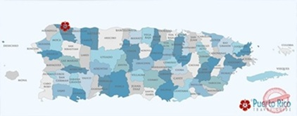
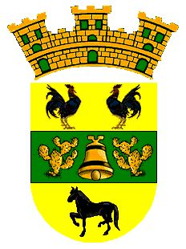

Mapa
Isabela se encuentra en la costa noroeste de Puerto Rico. Su ubicación permite conectar el pueblo con la ruta del oeste y con municipios cercanos como Aguadilla, Quebradillas y San Sebastián.
El Jardín del Noroeste
Playas, historia, cultura y naturaleza en la costa noroeste.
Isabela es un municipio ubicado en la costa noroeste de Puerto Rico. Es conocido como “El Jardín del Noroeste” por sus paisajes naturales, playas, áreas verdes y ambiente costero. Fue fundado en 1819 y actualmente es uno de los pueblos más visitados de la región oeste.
El municipio limita con Aguadilla, Quebradillas y San Sebastián. Su localización lo convierte en un lugar ideal para el turismo, el surf, la gastronomía local y la exploración de espacios naturales.
Este video muestra parte del ambiente turístico y natural de Isabela. Sirve como recurso visual para conocer mejor el pueblo y sus atractivos.

Isabela se encuentra en la costa noroeste de Puerto Rico. Su ubicación permite conectar el pueblo con la ruta del oeste y con municipios cercanos como Aguadilla, Quebradillas y San Sebastián.

El escudo de Isabela contiene los gallos que simbolizan la tradición y el carácter del pueblo, la campana representa la fe y la historia religiosa, mientras que el caballo refleja la vida agrícola y el desarrollo rural de la zona.
La bandera utiliza los colores amarillo y verde. El amarillo simboliza luz, energía y prosperidad; el verde representa naturaleza, agricultura y los paisajes del municipio.